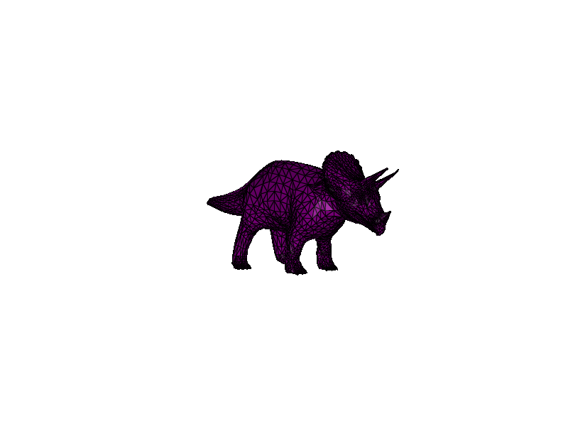

Note
Go to the end to download the full example code.
Picking Faces from a Mesh#
Demonstrates how to identify (pick) individual faces on a mesh.
Arguments: * –mesh - Path to a mesh file (OBJ/OBJ.GZ) [optional]
Controls: * p - Toggle face picking view - shows the colors encoding face ID * r - Clear painted faces * s - Cycle shading modes (None, ‘flat’, ‘smooth’) * w - Toggle wireframe
import argparse
import itertools
import time
import numpy as np
from vispy import app, scene
from vispy.io import read_mesh, load_data_file
from vispy.scene.visuals import Mesh
from vispy.scene import transforms
from vispy.visuals.filters import ShadingFilter, WireframeFilter, FacePickingFilter
parser = argparse.ArgumentParser()
default_mesh = load_data_file('orig/triceratops.obj.gz')
parser.add_argument('--mesh', default=default_mesh)
args, _ = parser.parse_known_args()
vertices, faces, _normals, _texcoords = read_mesh(args.mesh)
canvas = scene.SceneCanvas(keys='interactive', bgcolor='white')
view = canvas.central_widget.add_view()
view.camera = 'arcball'
view.camera.depth_value = 1e3
# Create a colored `MeshVisual`.
face_colors = np.tile((0.5, 0.0, 0.5, 1.0), (len(faces), 1))
mesh = Mesh(
vertices,
faces,
face_colors=face_colors.copy()
)
mesh.transform = transforms.MatrixTransform()
mesh.transform.rotate(90, (1, 0, 0))
mesh.transform.rotate(-45, (0, 0, 1))
view.add(mesh)
# Use filters to affect the rendering of the mesh.
wireframe_filter = WireframeFilter()
shading_filter = ShadingFilter()
face_picking_filter = FacePickingFilter()
mesh.attach(wireframe_filter)
mesh.attach(shading_filter)
mesh.attach(face_picking_filter)
def attach_headlight(view):
light_dir = (0, 1, 0, 0)
shading_filter.light_dir = light_dir[:3]
initial_light_dir = view.camera.transform.imap(light_dir)
@view.scene.transform.changed.connect
def on_transform_change(event):
transform = view.camera.transform
shading_filter.light_dir = transform.map(initial_light_dir)[:3]
attach_headlight(view)
shading = itertools.cycle(("flat", "smooth", None))
shading_filter.shading = next(shading)
throttle = time.monotonic()
@canvas.events.mouse_move.connect
def on_mouse_move(event):
global throttle
# throttle mouse events to 50ms
if time.monotonic() - throttle < 0.05:
return
throttle = time.monotonic()
# adjust the event position for hidpi screens
render_size = tuple(d * canvas.pixel_scale for d in canvas.size)
x_pos = event.pos[0] * canvas.pixel_scale
y_pos = render_size[1] - (event.pos[1] * canvas.pixel_scale)
# render a small patch around the mouse cursor
restore_state = not face_picking_filter.enabled
face_picking_filter.enabled = True
mesh.update_gl_state(blend=False)
picking_render = canvas.render(
region=(x_pos - 1, y_pos - 1, 3, 3),
size=(3, 3),
bgcolor=(0, 0, 0, 0),
alpha=True,
)
if restore_state:
face_picking_filter.enabled = False
mesh.update_gl_state(blend=not face_picking_filter.enabled)
# unpack the face index from the color in the center pixel
face_idx = (picking_render.view(np.uint32) - 1)[1, 1, 0]
if face_idx > 0 and face_idx < len(face_colors):
# this may be less safe, but it's faster than set_data
mesh.mesh_data._face_colors_indexed_by_faces[face_idx] = (0, 1, 0, 1)
mesh.mesh_data_changed()
@canvas.events.key_press.connect
def on_key_press(event):
if event.key == 'p':
face_picking_filter.enabled = not face_picking_filter.enabled
mesh.update_gl_state(blend=not face_picking_filter.enabled)
mesh.update()
if event.key == 'r':
mesh.set_data(vertices, faces, face_colors=face_colors)
if event.key == 's':
shading_filter.shading = next(shading)
mesh.update()
if event.key == 'w':
wireframe_filter.enabled = not wireframe_filter.enabled
mesh.update()
canvas.show()
if __name__ == "__main__":
print(__doc__)
app.run()
Total running time of the script: (0 minutes 0.968 seconds)